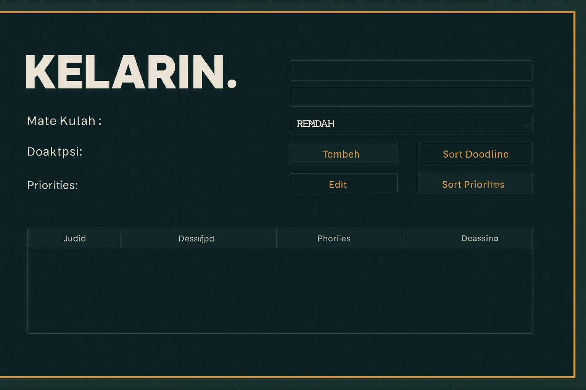

Deskripsi
Proyek ini dibuat menggunakan Java OOP dan GUI (Swing). Fitur utama meliputi:
- Menambahkan dan menghapus tugas
- Checkbox status selesai/belum
- Exception handling untuk input tidak valid
- Desain GUI dengan warna harmonis
Demo

Source Code
Lihat di GitHubDokumentasi
Dokumentasi lengkap tersedia melalui Javadoc yang dihasilkan.